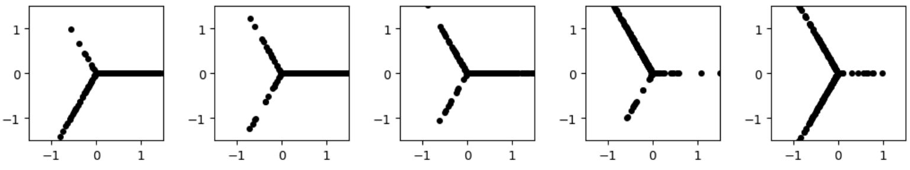
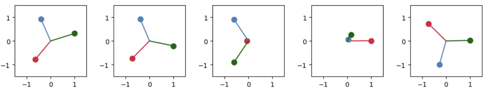
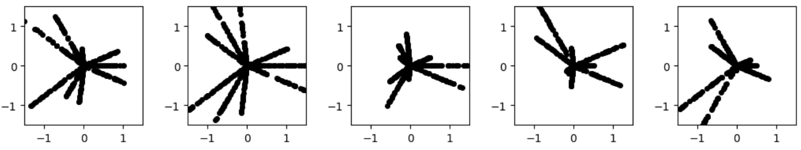

An exploration of sparse autoencoders trained on synthetic data
[Under construction. Note: the text and some interactive visuals are still in the experimental phase and might be modified in the next iteration]
The Anthropic interpretability team recently showed Sparse Autoencoders (SAEs) can extract interpretable
concepts from Claude 3 Sonnet. In the following weeks,
OpenAI and DeepMind showcased similar results using their own variant autoencoders, Gated SAEs (DeepMind) and K-Sparse AEs (OpenAI).
We would like to understand how these models work, what sort of features they can learn, and replicate some of the phenomena observed in large models ourselves.
For our experiments we will train small models on synthetic data and mechanistically study the trained models and the features they encode.
Two phenomena observed while training the vanilla SAEs with L1 sparsity are quite interesting: "Shrinkage" and "Splitting" .
Sparse Autoencoders as feature extractors
Autoencoders (AE) generally consist of an encoder and a decoder,
where the encoder maps the input to a latent space and the decoder reconstructs the input from this
latent space. One of the key objectives of an autoencoder is to capture the most important features
of the data necessary to reconstruct it. A sparse autoencoder (SAE) adds a sparsity penalty (L1 loss) to the loss function to learn sparse representations. For our purposes, we want to decompose an input \( x^j \in \mathbb{R}^d \) into a sparse, linear combination of feature directions:
\[
x^j = x^j_0 + \sum_{i=1}^M f_i(x^j) d_i,
\]
where \( d_i \in \mathbb{R}^M \) are \( M \gg d \) are the feature directions, and the sparse coefficients \( f_i(x^j) \geq 0 \) are
the corresponding feature activations for the directions. Since it is possible to arbitrarily reduce the sparsity loss term without affecting reconstructions, we might have to constrain the norms of the columns of \( W_{\text{dec}} \)
during training, as suggested by previous work from DeepMind
. Thus, this will be our model: for some input \(\mathbf{x} \in \mathbb{R}^d\), the encoder is:
\[
\mathbf{h} = \text{ReLU}(W_{\text{enc}} (x - b_{\text{dec}}) + b_{\text{enc}})
\]
The decoder reconstructs the input and can be represented as:
\[
\mathbf{\hat{x}} = W_{\text{dec}} \mathbf{h} + b_{\text{dec}}
\]
The loss is the sum of the error in reconstruction of the input (typically the MSE) and a sparsity penalty on L1 penalty on the activations \(\mathbf{h} \in \mathbb{R}^M\)
\[
L = L_{\text{reconstruction}} + \lambda L_{\text{sparsity}} = \|\mathbf{x} - \mathbf{\hat{x}}\|^2_2 + \lambda \sum_{i=1}^M |h_i|
\]
What causes feature shrinkage?
Case I: No \(L_1\) regularization \[L = \sum \| \hat{x} - x \|^2\]
\[
\frac{\partial L}{\partial x} = 2 (\hat{x} - x) \left( \frac{\partial \hat{x}}{\partial x} - 1 \right)\]
Minimum loss is achieved when \(\frac{\partial L}{\partial x} = 0\), or
\[
2 (\hat{x} - x) \left( \frac{\partial \hat{x}}{\partial x} - 1 \right) = 0\]
The obvious optimal solution for this is \(\hat{x} = x\)
Case II: with \(L_1\) regularization
\[L = \| \hat{x} - x \|^2 + \lambda \| h \|_1\]
\[\frac{\partial L}{\partial x} = 2 (\hat{x} - x) \left( \frac{\partial \hat{x}}{\partial x} - 1 \right) + \lambda \frac{\partial \| h \|_1}{\partial x}\]
At the optimal point:
\[
\frac{\partial L}{\partial x} = 2 (\hat{x} - x) \left( W_d W_e \cdot \text{diag}(H(W_e (x - b_d) + b_h)) - 1 \right) + \lambda W_e \cdot \text{diag}(H(W_e (x - b_d) + b_h)) = 0
\]
Rearanging, we get:
\[
\hat{x} = x - \frac{\lambda W_e \cdot \text{diag}(H(W_e (x - b_d) + b_h))}{2 \left( W_d W_e \cdot \text{diag}(H(W_e (x - b_d) + b_h)) - 1 \right)}
\]
The reconstruction \(\hat{x}\) is shifted by a term that depends on the regularization parameter \(\lambda\) and the weights \(W_e\) and \(W_d\). This shift results in shrinkage and can even pull \(\hat{x}\) to zero in extreme cases.
Let us see this reconstruction shrinkage in action: we will train an SAE on data sampled from a unit circle in 2D.
The sliders vary hyperparameters for the SAE: the lambda controls the strength of the regularization, and the hidden dimension is the number of neurons in the output of the encoder or the input of the decoder (or equivalently the number of feature directions that the SAE can find).
At stronger sparsity regularization (larger lambda) the reconstructions show the shrinkage effect, collapsing down to a point in an extreme case. Also, since the original data is symmetric, the best the model can do is find orthogonal directions to encode the data (it requires 4 directions to do that since we have used ReLU activation, which only allows positive activation magnitude).
Original data along with its reconstructions
Encoded activations
* Maximum value for a neuron is shown in grey
Large language models like ChatGPT and Claude encode lots of concepts (possibly of the order of millions or more) but the features recovered by the SAEs depend on the size of the hidden dimension.
If the SAE model size is not large enough, the model might have to "cut costs" (preferentially learn some directions instead of others). Let us construct an example that will build up to such a scenario.
Case I
Our toy dataset will be 3 "spokes" of data embedded in 2D, inspired by the works on toy models of superposition
and follow-up works
.
Suppose each spoke represents a feature direction and points farther along a spoke indicate higher activation for that feature. Here are some subsets of such data used to train our models:

After the trained models can recover these directions, except in cases where the sparsity causes some directions to zero out completely, resulting in "dead features" (We'll come back to it later).

Case II
Now consider a case where each of the three directions are split into 3 directions, a total of 9 directions:

Original data along with its reconstructions
Encoded activations
* Maximum value for a neuron is shown in grey
Note that here too, the structure of the data is symmetric, so the model is better off learning symmetric feature directions, in this case they are equiangular at angle 2\(\pi\)/3.
How does an SAE deal with features of different density?
Here is an example of four gaussian clusters with different densities and orientations. If the original data is not symmetric, then learning symmetric directions is not optimal for reconstruction (though it can learn them under high sparsity constraints, eg. at h_dim = 3 and lambda = 1). But interestingly, model dedicates specific feature feature directions for higher density clusters.
Original data along with its reconstructions
Encoded activations
* Maximum value for a neuron is shown in grey